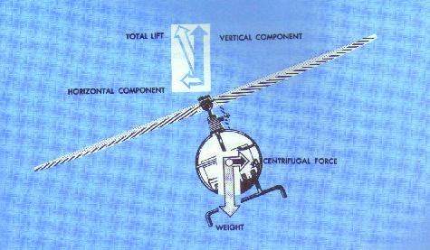
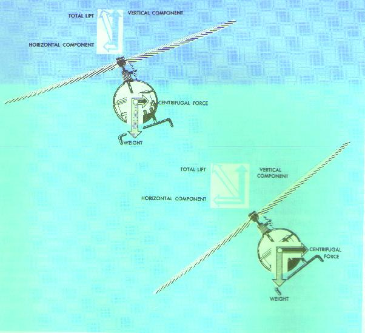
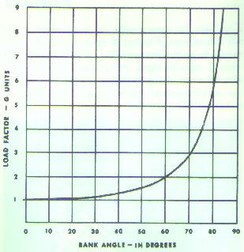

Before discussing loads and load factors, it is first necessary to discuss the lift forces during turns.
Turns are made in a helicopter, as in an airplane, by banking. In forward flight, the rotor disc is tilted forward which also tilts the total lift-thrust force of the rotor disc forward. This total force is the resultant of a vertical component, lift, and a horizontal component, thrust, acting forward. When the helicopter is placed in a bank, the rotor disc is tilted sideward. This causes the lift component to be tilted sideward, which in turn, is divided into two components--one acting vertically that opposes weight, the other acting horizontally to the side and opposes centrifugal force (fig. 24). It is this horizontal component of lift that pulls the helicopter in the direction of bank and thus causes it to turn. Briefly then, we can say that a turn is produced by banking the helicopter, thus allowing the lift of the rotor disc to pull the helicopter from its straight course.

Figure 24.- Forces acting on a helicopter in a turn.
Lift causes the helicopter to turn when it is banked.
As the angle of bank increases, the total lift force is tilted more toward the horizontal, thus causing the rate of turn to increase because more lift is acting horizontally. Since the resultant lifting force acts more horizontally, the effect of lift acting vertically (vertical component) is decreased (fig. 25). To compensate for this decreased vertical lift, the angle of attack of the rotor blades must be increased in order to maintain altitude. The steeper the angle of bank, the greater the angle of attack of the rotor blades required to maintain altitude. Thus, with an increase in bank and a greater angle of attack, the resultant lifting force will be increased and the rate of turn will be faster.

Figure 25.- Relationship between angle of bank and
total lift force. As the angle of bank increases,
the total lift force
is tilted more horizontally, resulting in a faster rate of turn.
Helicopter strength is measured basically by the
total load the rotor blades are capable of carrying without permanent
damage. The load imposed upon the rotor blades depends largely on the
type of flight. The blades must support not only the weight of the
helicopter and its contents (gross weight), but also the additional loads
imposed during maneuvers.
In straight-and-level flight, the rotor blades
support a weight equal to the helicopter and its contents. So long as
the helicopter is moving at a constant altitude and airspeed in a straight
line, the load on the blades remains constant. When the helicopter assumes
a curved flightpath--all types of turns (except hovering turns utilizing
pedals only), flares, and pullouts from dives--the actual load on the
blades will be much greater because of the centrifugal force produced by
the curved flight. This additional load results in the development of much
greater stresses on the rotor blades.
The load factor is the actual load on the rotor blades
at any time, divided by the normal load or gross weight (weight of the
helicopter and its contents). Any time a helicopter flies in a curved
flightpath, the load supported by the rotor blades is greater than the
total weight of the helicopter. The tighter the curved flightpath, that is,
the steeper the bank, or rapid the flare or pullout from a dive, the greater
the load factor.
The load factor and, hence, apparent gross weight
increase is relatively small in banks up to 30°
(fig. 26). Even so, under the right set
of adverse circumstances, such as high-density altitude, gusty air, high
gross weight, and poor pilot technique, sufficient power may not be
available to maintain altitude and airspeed. Above 30° of bank, the
apparent increase in gross weight soars. At 30° of bank, the apparent
increase is only 16 percent, but at 60°, it is 100 percent
(fig. 26).

Figure 26.- Load factor chart.
If the weight of the helicopter is 1,600 pounds, the
weight supported by the rotor in a 30° bank at a constant altitude
would be 1,856 pounds (1,600 + 256). In a 60° bank, it would be 3,200
pounds; and in an 80° bank, it would be almost six times as much
or 8,000 pounds.
One additional cause of large load factor is rough or
turbulent air. The severe vertical gusts produced by turbulence can cause
a sudden increase in angle of attack, resulting in increased rotor blade
loads that are resisted by the inertia of the helicopter.
To be certificated by FAA, each helicopter must have
a maximum permissible limit load factor that should not be exceeded. As a
pilot you should have the basic information necessary to fly a helicopter
safely within its structural limitations. Be familiar with the
situations in which the load factor may approach maximum, and avoid
them. If you meet such situations inadvertently, you must know the
proper technique.
{kind=link}
{kind=link}
{kind=link}